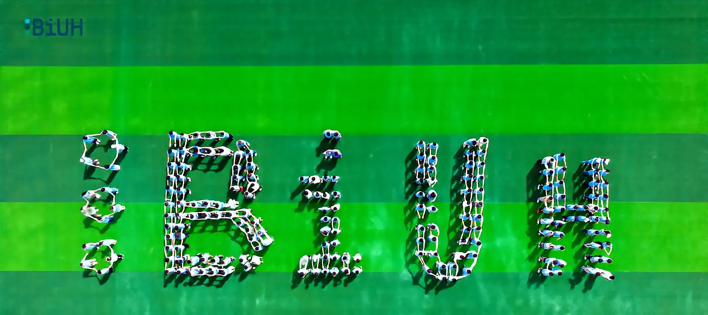

1. Arriving and settling in
The documents you need, the order to do things in, and what to buy on your first night.
For the students arriving next year
This is not a travel guide. It is the part nobody tells you before you land: how to register, where to eat on campus, where your parcel actually ends up, and what to do with a weekend.

I am a current student here. This is for the people arriving next year, and for anyone who has just landed and is still working out which building is which.
One thing I want to say before you come. This is a quiet place to study. The campus is green and open, life here is simple, and nobody will hurry you. I hope that within your first year you have found your own place in it.
How to use it: read Arriving before you travel, Campus once you have moved in, and Danzhou when you finally want to leave campus.
The documents you need, the order to do things in, and what to buy on your first night.
Canteens, the supermarket, the parcel lockers, the shared printers, and the trip into town.
What to eat, how the weather really behaves, and where to go at the weekend.
Everything here is either something I ran into myself or something I asked an older student about. I am not writing for the university, and nothing on this site is an official document.
For anything official — what to bring, what to pay, when to register — the offer letter and the university's own notices are what count. Where a section is only my opinion, I have said so. Where prices or opening times can change, check them on the day.